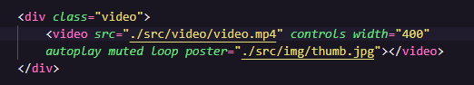

Quando colocamos o vídeo, assim como no áudio, precisamos colocar o atributo "controls" para que apareçam os controles de play e áudio. Para deixar o vídeo em um tamanho mais legal pordemos colocar o "width" e por o valor que queremos. Podemos fazer isso tanto pela tag de vídeo quanto pelo CSS.
Podemos usar o autoplay para da play no vídeo assim que a página for carregada (melhor deixar isso
para o usuário decidir). Para dar autoplay temos que usar também o "muted". Isso varia de navegador
para navegador, no Chrome precisa ser assim.
Normalmente isso é usado para sites que tem algum painel e precisa ter um vídeo rolando por trás e
em looping, como por exemplo esse projeto do Mário que fizemos:
Projeto Mário
Outro atributo que podemos colocar é o "poster", com ele podemos colocar uma capa para nosso vídeo. Para isso não podemos usar o "loop".
Para colocar uma capa no vídeo colocamos "poster" e direcionamos para a foto de capa desejada.

Aqui temos dois sites que podemos baixar vídeos para usar de forma gratuita nos nossos projetos:
Usar a tag de vídeo dessa forma ocupa muito espaço na hospedagem do site uma alternativa é usar sites como o YouTube para puxar um vídeo de lá e colocar aqui usando o "iframes". Veja na aula Iframes.